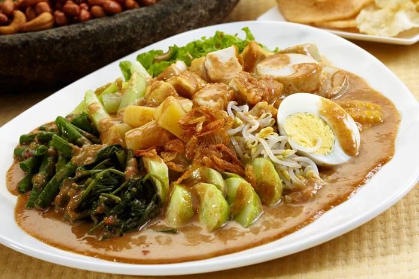

Gado-gado adalah salah satu makanan khas Indonesia yang terkenal dengan kelezatannya. Makanan ini terdiri dari berbagai sayuran segar yang direbus atau dikukus, seperti kacang panjang, kol, tauge, dan kentang. Sayuran tersebut kemudian disiram dengan saus kacang yang gurih dan manis, serta ditambahkan dengan irisan telur rebus, tahu, tempe, dan kerupuk sebagai pelengkap.
Gado-gado memiliki cita rasa yang unik karena perpaduan antara sayuran segar dan saus kacang yang kaya akan rempah. Makanan ini tidak hanya lezat tetapi juga sehat karena mengandung banyak serat dan nutrisi dari sayuran. Gado-gado sering disajikan sebagai hidangan utama atau sebagai lauk pendamping dalam berbagai acara.
| Variasi | Ciri khas |
|---|---|
| Gado-gado Betawi | Gaya Jakarta, bumbu kacang dibuat kental |
| Gado-gado Padang | Ditambah mi kuning dan soun, rasanya cenderung pedas |
| Gado-gado Sidoarjo | Bumbu kacang diberi petis |
| Karedok | Mirip gado-gado, tetapi sayurannya mentah |
Bahan-bahan:
Bumbu Kacang:
Cara membuat:
Ada pertanyaan atau mau pesan g ado-gado? Hubungi kami: